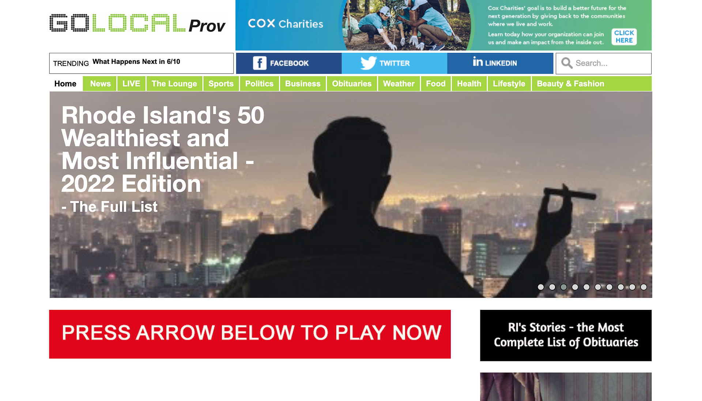
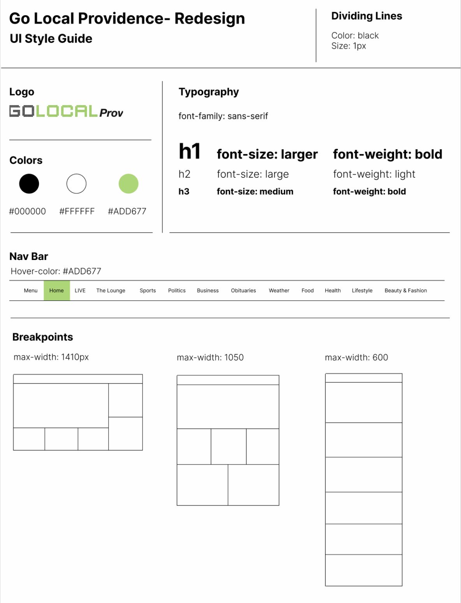

This project was done for CS1300: UI/UX. The goal of the assignment was to find a website and redesign it for better usability and responsiveness.
The website I chose to redesign was GoLocalProvidence. I chose this website because it is a fairly well-known news outlet, but lacks credibility upon first glance because of the UI (click on image below to see original website)
I analyzed GoLocalProvidence's current website using WAVE. The current website for Go Local Providence has 52 errors and 200 alerts. Most of the errors are due to the lack of alt text on images and empty headings. The lack of alt text makes it difficult for visually impaired people or people using screen readers to navigate the site in the same capacity. The empty headings occurred where there were ads interspersed throughout the articles. Most of the alerts were due to redundant links. Each article’s title was a link to the article and then right below would be a link to the article that says “read more” after the description. I understand how these links are redundant.
I began the redesign process by creating Lo-Fi designs for a phone, tablet, and desktop with the goal of fixing the usability issues identified in the current website
The next step in the redesign process was creating a UI style guide to make sure my website has a cohesive design
The next step in the redesign process was creating hi-fi designs for a phone, tablet, and desktop based on the lo-fi designs and following the UI style guide
This project taught me a number of skills. I learned how to critically analyze a site for usability, how to design with those ideas in mind and how to code a fully responsive webpage.